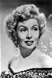

Country:United States, 68 minutes
Spoken languages:English
Genres:Horror, Sci-Fi
Director(s):Jean Yarbrough
Writer(s):John T. Neville
Video Codec:Unknown
Number: 64


Certification:
Storyline:
Dr. Carruthers feels bitter at being betrayed by his employers, Heath and Morton, when they became rich as a result of a product he devised. He gains revenge by electrically enlarging bats and sending them out to kill his employers' family members by instilling in the bats a hatred for a particular perfume he has discovered, which he gets his victims to apply before going outdoors. Johnny Layton, a reporter, finally figures out Carruthers is the killer and, after putting the perfume on himself, douses it on Carruthers in the hopes it will get him to give himself away. One of the two is attacked as the giant bat makes one of its screaming, swooping power dives.
Cast: 

Medium: Original DVD,
Comments: Part of: 100 Greatest Horror Classics & Part of: Midnight Madness - 20 Movie Collection
Loaned: No
Aspect ratio: Unknown